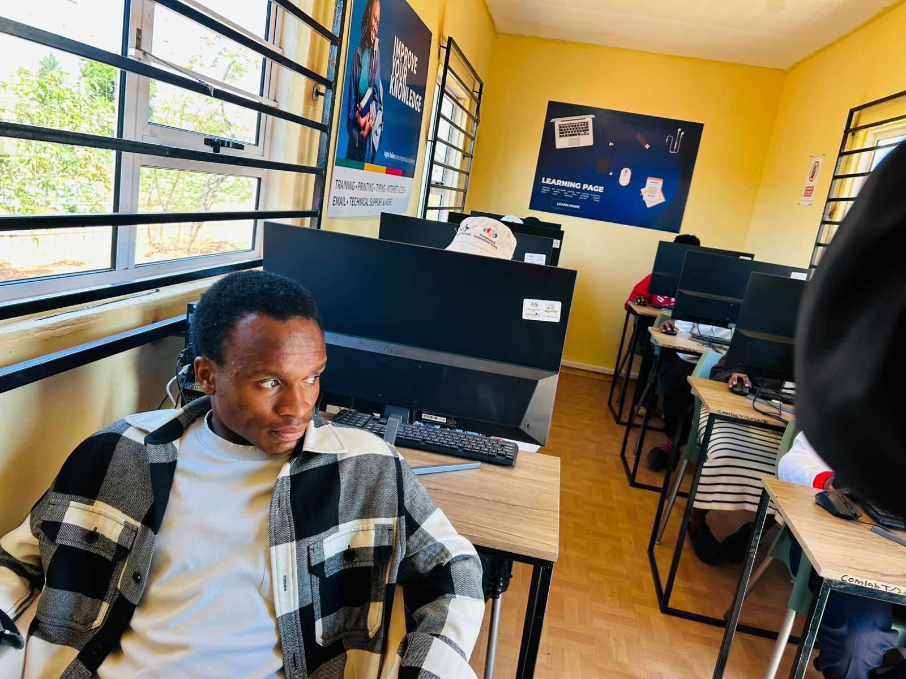

Our Mission
To make useful technology, professional support and practical digital skills accessible to the community.

mi Print is a community-focused computer lab and professional service space created to make technology, internet access, practical computer skills and essential digital services more accessible and affordable.
We provide a welcoming environment where learners, job seekers, entrepreneurs, organisations and community members can use computers, access reliable internet, prepare documents, complete online applications and build practical digital skills.
EXPLORE OUR SERVICES
Our work is guided by a commitment to practical digital access and community opportunity.
To make useful technology, professional support and practical digital skills accessible to the community.
To build a digitally confident community that can participate more fully in learning, work and business.
To turn access into opportunity through computers, connectivity, training and everyday professional services.
From basic computer skills to applications and business support, we help people build confidence and get things done.

Visit Tiangmaatla Office for computer access, training information and digital services.
CONTACT US